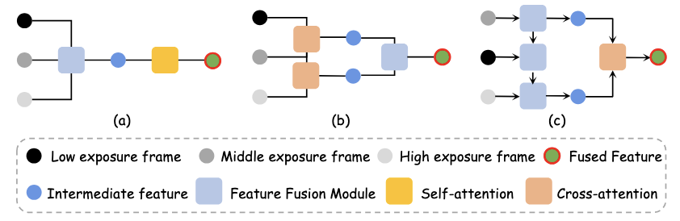
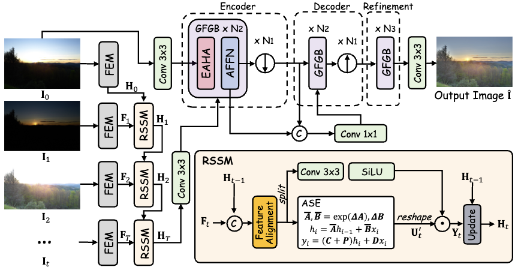
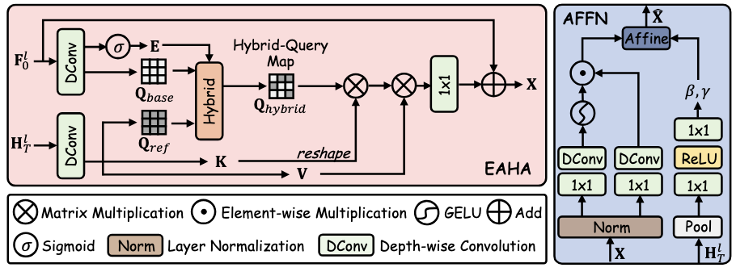

Multi-exposure fusion (MEF) brings the dynamic range of conventional cameras closer to that of human vision, producing images with rich scene content. Given the large variability in scene luminance, exposure strategies often require different numbers of frames to capture the full radiance range faithfully. However, conventional MEF techniques are typically designed for a fixed number of inputs, forcing deployment systems to maintain separate models for different frame-count requirements, which undermines deployment efficiency. To address this limitation, we propose FreeMEF, the first flexible-frame transformer for MEF that seamlessly accommodates varying numbers of input exposures without retraining or architectural changes. The proposed approach consists of two key modules. First, we introduce a recurrent state space module (RSSM) that sequentially fuses features from arbitrary sequences via adaptive alignment and state-space recurrent modeling, thereby providing global information guidance for the subsequent restoration. Second, we devise a global feature guided block (GFGB) incorporating an extremity-aware hybrid attention (EAHA) and an affine-injection feed-forward network (AFFN), which effectively resolves the similarity paradox while simultaneously optimizing contrast and brightness regulation. Extensive experiments on three benchmark datasets demonstrate the effectiveness of our method, which performs favorably against state-of-the-art methods both quantitatively and qualitatively.



@inproceedings{FreeMEF,
title={There and Back Again: A Flexible-Frame Transformer for Multi-Exposure Fusion},
author={Qu, Lishen and Liu, Yao and Zhou, Shihao and Liang, Jie and Zeng, Hui and Zhang, Lei and Yang, Jufeng},
booktitle={European Conference on Computer Vision (ECCV)},
year={2026}
}